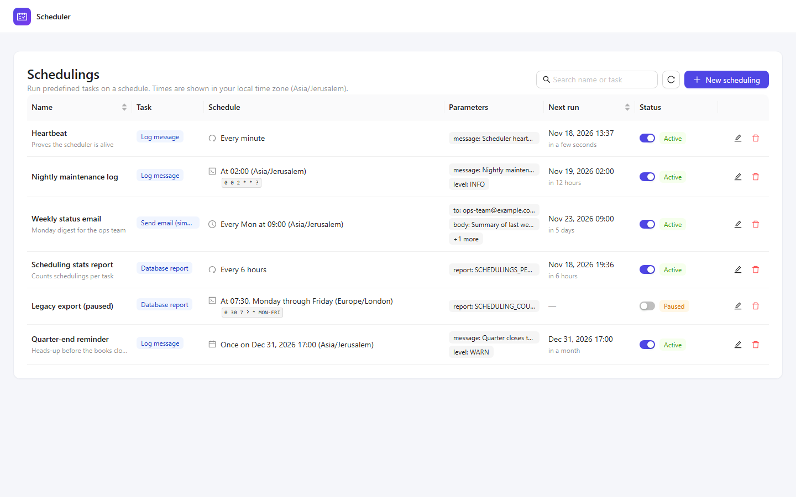
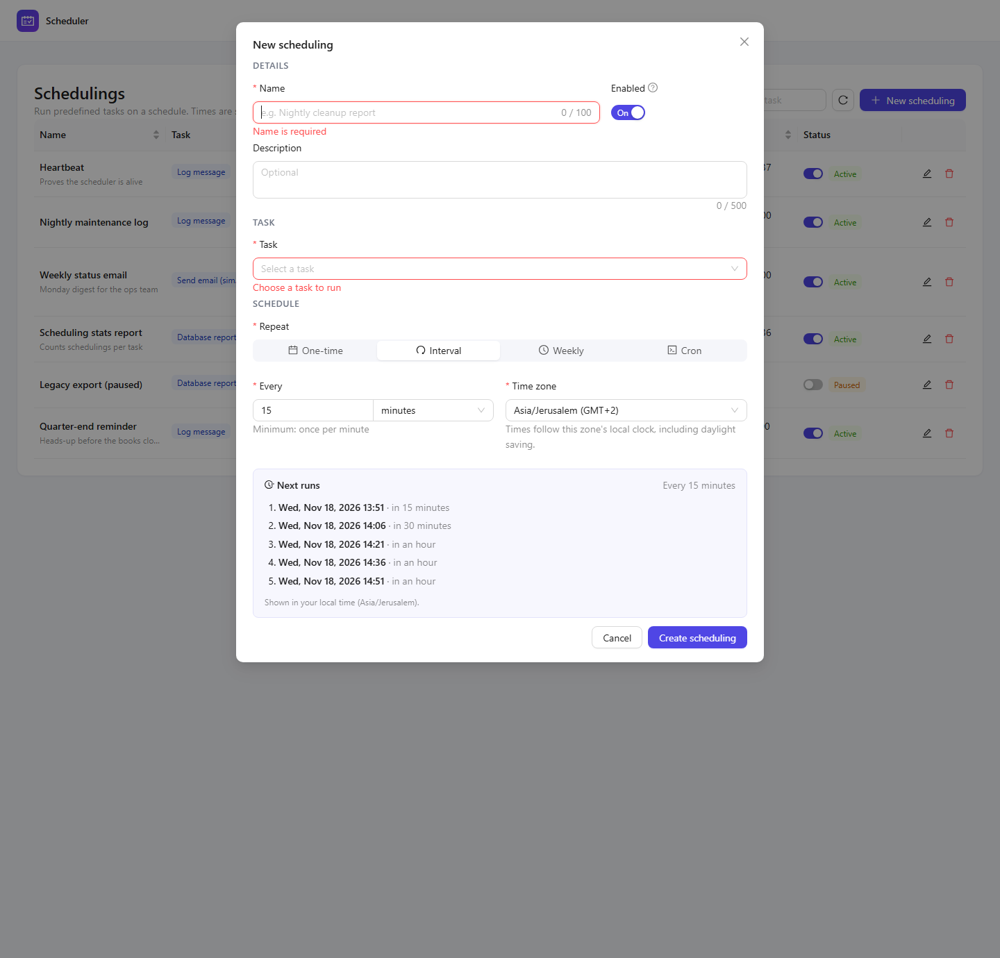
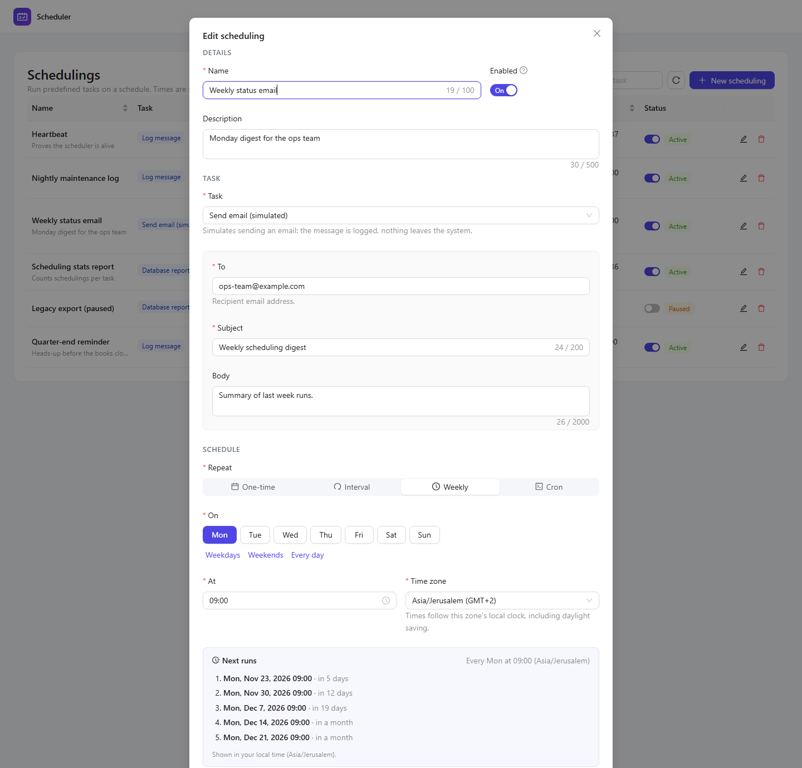
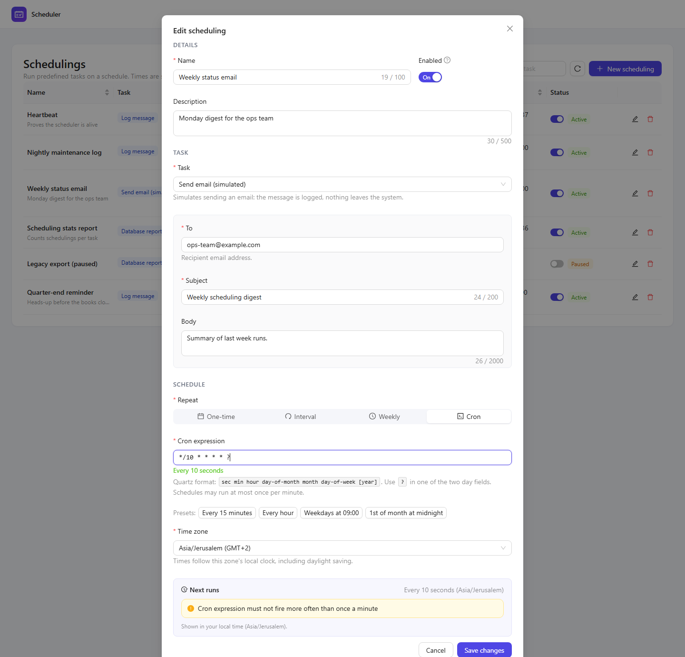

A full-stack system for scheduling executions of predefined tasks. It supports one-time, interval, weekly and cron schedules, and runs them with Quartz on Spring Boot, behind a Next.js + Ant Design UI.
| Repository | github.com/assafm7/scheduling-system |
| Submitted by | Assaf Meirom |
| Date | November 18, 2026 |
| Run it | cd docker → create .env → docker compose up --build → localhost:3000 |
| Requirement | How it is met |
|---|---|
| ✓ React UI: table of all schedulings | An Ant Design table with name, task, human-readable schedule, parameters, next run (local time), an enabled switch and a status tag |
| ✓ Full CRUD for schedulings | Create and edit in a modal form, delete with confirmation. Backed by POST/GET/PUT/DELETE /api/schedulings |
| ✓ Select a task from a predefined list | Task select populated from GET /api/tasks, with each task's description shown |
| ✓ Schedule timing configuration | Segmented control: one-time, interval (every N minutes/hours/days), weekly (days + time), cron (Quartz syntax with presets), each with a time zone. A live preview of the next 5 runs comes from the backend |
| ✓ Task parameter inputs | Rendered dynamically from each task's parameter schema (text, number, boolean, email, enum) |
| ✓ One-time, recurring, weekly, cron | Mapped to Quartz SimpleTrigger / CronTrigger by TriggerFactory, with misfire policies per type |
| ✓ Spring Boot CRUD APIs | REST controllers with RFC 9457 ProblemDetail errors, field-keyed validation messages, 404s, and 409 on concurrent edits (optimistic locking) |
| ✓ Quartz integration and job execution | JDBC job store in the same PostgreSQL. One generic TaskExecutionJob runs the task with its stored parameters. Failures are contained |
| ✓ Persist all relevant data | Schedulings in PostgreSQL (Flyway migrations), and Quartz jobs and triggers in the same database. Everything survives restarts |
| ✓ Predefined, read-only tasks | LOG, EMAIL (simulated), DB_REPORT (allow-listed queries). Defined in code, with no write endpoints |
| ✓ Parameters passed to the task at execution | Stored in the Quartz job data (as JSON strings) and handed to ScheduledTask.execute(TaskContext). Verified by an integration test that waits for a real execution |
| ✓ Bonus: parameter schema per task | Name, label, type, required flag, plus enum options and max length |
| ✓ Bonus: required parameters enforced in UI and backend | Ant Design form rules come from the schema. ParameterValidator on the server is authoritative |
| ✓ Unit + integration tests, coverage | 60 backend tests (96.6% lines, JaCoCo) including Testcontainers integration tests; 141 frontend tests (97.2% lines, Vitest + RTL) |
✓ /frontend, /backend, /docker, Dockerfiles, compose | Multi-stage, non-root images. One docker compose up --build runs everything |
| ✓ README: run, design decisions, assumptions | README.md has a reviewer quick start (macOS/Linux/Windows), design decisions, assumptions and the OWASP review |
| ✓ AI tools disclosure | Section 8 of this document and the README |
You only need Git and Docker Desktop. Java and Node are not required, because everything builds inside Docker.
git clone https://github.com/assafm7/scheduling-system.git
cd scheduling-system/docker
# Create the git-ignored .env with a DB password (there are no built-in default credentials)
echo "POSTGRES_PASSWORD=$(openssl rand -hex 16)" > .env # macOS / Linux / Git Bash
"POSTGRES_PASSWORD=$([guid]::NewGuid().ToString('N'))" | Out-File -Encoding ascii .env # Windows PowerShell
docker compose up --build # first build takes a few minutes
# open http://localhost:3000
docker compose logs -f backend. The message appears within about a minute, tagged with the scheduling id.docker compose restart: schedulings persist, because Quartz keeps its state in PostgreSQL.cd backend && ./mvnw verify # unit + Testcontainers integration tests, JaCoCo report cd frontend && npm ci && npm test # unit + component tests (npm run test:coverage for coverage)




parameters.x, schedule.x) are attached to the matching form field.aria-labels on icon buttons (e.g. "Edit Weekly report"), and keyboard-friendly forms.scheduling row and its Quartz job and trigger are written in one database transaction (Spring's LocalDataSourceJobStore). The table and the scheduler can never drift apart, and an integration test proves the rollback.SchedulingService validates everything up front and returns all field errors at once: the task exists, the parameters match the task schema, and the schedule is valid. Errors are keyed like parameters.message or schedule.expression, and the UI attaches each one to its form field.TaskExecutionJob looks up the task by key and executes it with the stored parameters. Each run is logged with schedulingId and taskKey in the MDC.| Backend package | Responsibility |
|---|---|
task | ScheduledTask contract, parameter schema, TaskRegistry, ParameterValidator, read-only /api/tasks |
scheduling | Entity, repository, service (transaction boundary), REST controller, sealed ScheduleSpec records |
quartz | TriggerFactory (validation + spec → trigger + preview), QuartzJobManager, TaskExecutionJob |
common | ProblemDetail exception handler, log sanitizer, JSON helper |
| Frontend | |
src/api, src/hooks | Typed API client (ProblemDetail → ApiError), TanStack Query hooks |
src/components | Schedulings table, form modal, schema-driven parameter fields, schedule fields, next-runs preview |
| Decision | Why |
|---|---|
| Quartz JDBC job store in the same PostgreSQL, sharing the transaction | Atomic create, update and delete across our table and Quartz. Schedules persist across restarts. Clustered mode makes it safe to run several backend replicas |
| One generic job class, with tasks as Spring beans | Adding a task means adding one @Component with no Quartz code. The task catalog is read-only by construction |
Sealed ScheduleSpec + a single TriggerFactory | One place validates and translates schedules. It's pure apart from an injected Clock, so it's fully unit-tested. It also powers the UI preview, so the preview can't disagree with real execution |
Edits use delete-then-schedule (not replace=true) | Quartz's JDBC store can't replace a trigger with one of a different type (cron ↔ simple). Our integration test caught this. Delete-then-create in the same transaction is still atomic |
idleWaitTime = 5s | Because jobs are scheduled inside our transaction, Quartz's wake-up can run before commit. This bounds the pickup delay to about 5s instead of the default 30s |
| Schema-driven parameters | One definition drives the UI form and the server validation. Unknown parameters are rejected, and values are trimmed and typed |
Optimistic locking (version) | Concurrent edits get a 409 instead of silently losing an update |
Same-origin /api through a Next.js rewrite | No CORS surface. The backend and DB are not published outside the Docker network |
| Flyway owns all DDL | Includes the official Quartz Postgres schema. Hibernate only validates |
| Ant Design + TanStack Query | Production-grade table, form and date/time widgets, plus caching and invalidation, with little glue code. The list auto-refreshes so the next run and status stay current |
| Test | What it proves |
|---|---|
SchedulingApiIntegrationTest | The real HTTP → JPA → Flyway → Quartz stack against PostgreSQL in Testcontainers:
|
TriggerFactoryTest | Every schedule type, time zones, past and too-frequent schedules, invalid cron and zone, the weekly → cron mapping, and the preview |
ParameterValidatorTest | Required, type, email, enum, length and unknown parameters (parameterized), plus normalization |
SchedulingServiceTest | Orchestration with mocks: all errors at once, nothing persisted on failure, version conflicts, deletion |
TaskExecutionJobTest, task tests | Parameters reach the task, failures are contained without a refire loop, log-injection is neutralized, and DB_REPORT runs only the fixed SQL |
| Area | What is tested (behavior-focused: RTL queries by role and label) |
|---|---|
SchedulingFormModal | Create payload is exact. Edit prefill and the PUT includes version. Changing the task resets parameters. Server 400 field errors are mapped onto fields. A 409 conflict offers a reload |
SchedulingsTable, SchedulingsPage | Rows, empty, loading and error-with-retry states. The Enabled toggle sends an update. Delete asks for confirmation. Status tags. Search |
ScheduleFields, DaysOfWeekPicker | Switching between the 4 types shows the right inputs. Weekday toggles and presets. Time zone default |
NextRunsPreview | Renders fire times, shows the backend validation message inline, and debounces requests (fake timers) |
TaskParameterFields | The right input per parameter type. Required rules block submit |
api/client, hooks | JSON, 204 and ProblemDetail become ApiError with sanitized field errors. Mutations invalidate the list query |
| Utilities | Schedule descriptions, spec ↔ form conversion for all 4 types, error-key mapping, time zones |
19 test files · 141 tests · lines 97.2% · statements 96.6% · branches 89.2% · functions 99.4%. The API module is mocked, so there are no network calls.
| Risk | Mitigation in this system |
|---|---|
| A01 Broken Access Control | No task write endpoints (read-only catalog). UUID identifiers. Same-origin only, with no CORS. No URL-fetching task, deliberately, to avoid SSRF |
| A02 Security Misconfiguration | DB password required from a git-ignored .env, with no defaults. Only the UI port is published. Actuator exposes health only. No stack traces in responses. CSP and security headers. Non-root containers |
| A03 Software Supply Chain Failures | Current supported versions. Lockfile with npm ci. Maven wrapper. Pinned image tags. npm audit --omit=dev reports 0 vulnerabilities (the remaining advisories are dev-only lint tooling) |
| A04 Cryptographic Failures | No sensitive data stored. Secrets only through the environment. TLS belongs at the ingress in a real deployment |
| A05 Injection | JPA and parameterized SQL only. DB_REPORT uses allow-listed fixed queries. Schema validation server-side. Cron parsed and validated. Control characters stripped before logging. React escaping |
| A06 Insecure Design | Maximum frequency of once a minute. Length limits on all fields. @DisallowConcurrentExecution. Bounded thread pool |
| A07 Authentication Failures | Out of scope, as a documented assumption. Minimal exposed surface |
| A08 Software & Data Integrity Failures | Polymorphic JSON limited to an explicit subtype allow-list. Quartz job data stored as strings only, so there's no Java deserialization |
| A09 Security Logging & Alerting Failures | Create, update and delete are logged with IDs. Every job run and failure is logged with schedulingId and taskKey in the MDC. User input is sanitized before logging |
| A10 Mishandling of Exceptional Conditions | Global ProblemDetail handler with a generic 500. Task failures are contained. Validation fails closed |
I built this project with Claude Code (Anthropic's CLI coding agent, model Claude Opus 5.5) as a pair programmer, and stayed in the loop on every decision:
feature/frontend) against the agreed API contract. The branch was then merged.Co-Authored-By: Claude trailer, so the history shows how the work progressed.